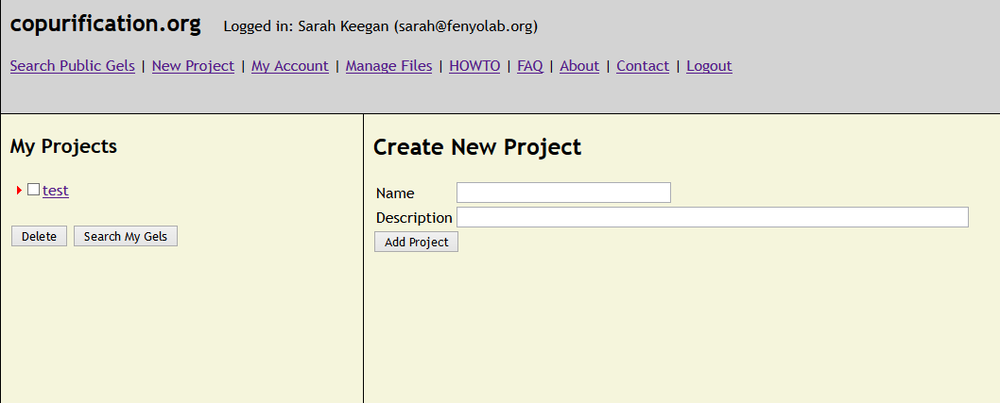
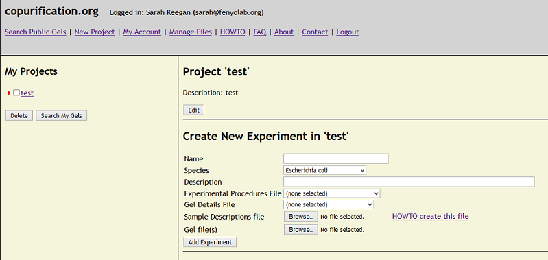
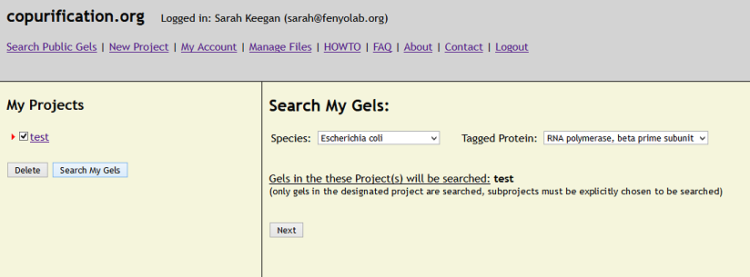
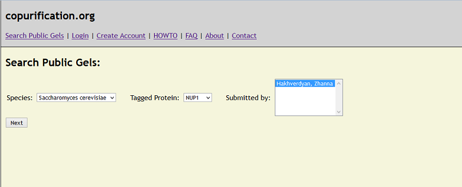
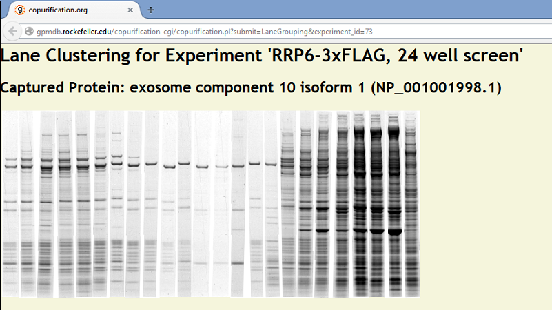

HOWTO
Overview - How this works.
Anyone can view data that has been made public. Follow the prompts to retrieve results. Specific reagents can be included
as well as excluded from searches.
Multiple elements in search lists can be selected by Shift+click and Ctrl+click. We believe the functionality is self-evident,
but should this not prove to be the case, please - we'll answer your query and add it to our FAQ if it proves to be common.
In order to take advantage of the curation features of this site for your own work, you'll need to create an account. Instructions on how to complete each step and use this site follow below. The basics are these:
I. Create an account - Ultimately this allows you to upload images of stained protein gels and files containing sample descriptions,
indicating which samples have been run on the gels. The images and sample descriptions are organized as "Experiments," which are associated with "Projects."
II. Create a Project - Projects are simply a way to organize your experiments. You must create a Project to add Experiments (images and sample descriptions) that will be associated with that Project. Multiple experiments can be added to any Project. Projects can also be created in any existing Project (i.e. as a sub-Project). Create multiple Projects to keep your different kinds of affinity capture experiments organized.
III. Upload Experiments - upload images of gels and tab-delimited text files that list the samples loaded on the gels as well as
some basic descriptive text. Our software will section the gel image into individual lanes according to the number of lanes
specified in the text file. The experimental conditions used to derive that sample, also specified in the text file, will be
linked to the lane. In this way, different lanes from different gels can be compared, with the conditions used to obtain the
results also displayed. All your data are kept Private to your account until you choose to share them Publicly.
IV. Retrieve results - You can catalog all of your purifications, and track the resulting banding patterns. You can also view any results that others have
made Public and compare them to your own.
As much as possible, we aim to implement Minimum Information Standards and
implement Ontologies and Controlled Vocabularies to maximize the value of experimental
data lodged in this repository.
HOWTO - Create an account.
Follow the link "Create Account" and fill out the web form. We encourage users to create an ORCID and
associate this ID with their account. These unique IDs provide a mechanism for a researcher to remain associated with and credited for their data and
publications. Once logged in, your account details can be changed via the "My Account" link.

HOWTO - Start a new Project.
While logged into your account, a new project may be added by clicking the "New Project" link. Once created, the new project will appear on the left side
of the screen. Clicking on the project displays the "Create New Experiment" interface, where experimental details, including images of gels and the affinity
capture conditions used, can be added to the project. A New Project can also be added to an existing Project by clicking on the Project and filling out the
"Create New Project" interface.

HOWTO - Add Experiments to a project.
Fill out the required fields, specifying the appropriate organism. "Experimental Procedures," a text file describing the
experiments and protocols, may be uploaded but is not currently required (the system will accept TXT, RTF, and DOC files). A
"Gel Details" file describing the conditions of the gel electrophoresis and basics of image development and capture
may also be added; although currently not required, for this we strongly recommend you supply an
MIAPE-GE compliant file (the system will accept TXT, RTF, DOC, and XML files).
Experiments must include both a "Sample Descriptions file," listing the purification conditions used in the
affinity capture experiments, and the associated gel image(s) showing the resulting banding patterns for each affinity captured sample. Currently,
the Sample Descriptions file is a plain text file including tab-delimited values. It must contain one line for each lane of the gel where a sample,
marker, or quantity standard has been loaded. Each line contains numerical and categorical data (format described below). Upload as many images as needed,
all the lanes present in each image are described in the same Sample Descriptions file. The images
may be in TIFF, PNG, BMP, and JPEG format, but we recommend
the use of 16-bit TIFF images. Please note that JPEG format images cannot be quantified by our band-detection tool.

Although our system will accommodate images in a variety of formats, resolutions, and bit-depths, we recommend the use of unprocessed, uncompressed
images; i.e. the original, raw data (e.g. as a 16-bit TIFF). Our system will apply brightness and contrast calibration during the curation process without
altering the original data . To get the best results from our lane-sectioning tool, gel images should be oriented such that the first lane (defined in
the Sample Descriptions file) is at the left, and the last lane is at the right, and that the gel is properly aligned
(see this example). For best results,
image the gel in the appropriate orientation, initially. However, rotation and cropping of the gel image, when needed, can be carried out in an image-processing
program - we recommend saving the file in the same format as the original.
Our program is equipped to ignore empty lanes or otherwise omit lanes not described in the Sample Descriptions
file. The total number of lanes in the image is defined in the Sample Descriptions file (example below). The positions of the samples loaded on the gel (lane number)
are also defined in the same file. Once the image is curated, the gel image is divided into lanes based on the total number specified in the Sample Descriptions
file,
and the lanes containing sample are identified based on their numerical position (counting from left to right), as specified in the Sample Descriptions file.
The lane-sectioning tool uses the average lane width as a guide to section empty lanes. Lanes not described in the Sample Descriptions file are treated as
empty and ignored Do not include rows for empty lanes in the Sample descriptions file because certain descriptive columns are mandatory for all lanes in the file
and will cause an error if not completed.
Example: You've run four, twenty-six-well midi-gels. Each gel contains one molecular weight marker, one BSA quantity standard and twenty-four
experimental samples - for a total of one hundred and four samples across four gels. You will need one
Sample Descriptions file listing all one hundred and four samples loaded across all four gels (see this example, and HOWTO below )
and four image files (one of each gel). Note: the names of the image files MUST match the "Gel file name" specified in the
Sample Descriptions file - this is how our program knows which sample descriptions go with which gel and which lanes on that gel.
HOWTO - Query Data in the System
To query your data (public and private), use the 'Search My Gels' button below the Projects listing in the left pane once logged in to the site.
Use the checkboxes to choose the Projects/Experiments to include in the Query.

Public Data can be queried via the 'Search Public Gels' link in the
Navigation bar. All query results will open in a new window so that your data may be compared to Public Data on the site.

HOWTO - Fill the fields of the Sample Descriptions file.
The Sample Descriptions file can be filled out as a spreadsheet in any program that can
save the result as a tab-delimited text file,
such as MS Excel. The function of this file is to provide information about the samples loaded on the gel, such as the composition of the
extraction solvent used, the protein of interest (bait), the affinity tag (if any), the antibody used for capture, and so on. Many of the
short comings of the current system will vanish once we switch to an XML format - and once we have had the chance to implement ontology and
controlled vocabulary. Please for questions or doubts. We encourage adding references to certain fields as PMID, PMCID or
DOI when helpful, as discussed below.
When describing the extraction solvent(s) used, multiple reagents of the same class (most commonly salts and detergents) can be specified by
adding the appropriate headings multiple times (e.g. salt, salt concentration, salt unit for each different salt used). Note: we currently
accept the following units of metric concentration - M, mM, uM, μM, nM, pM. Note, micromolar units can use either a 'u' or a Greek letter mu as
the prefix. We also accept concentrations expressed as percent volume units: % w/v and % v/v (however, we are not currently processing
% w:v, % v:v or any units expressed as percent weight). Here is a full list of all the reagents
currently supported by our system.
if you need to have a reagent added to this list for your upload to work. In most cases an example of common usage can be gleaned by viewing the public data and the
example
Sample Descriptions file.
- The following fields are mandatory for each lane: Gel file name, Lane # on gel, and Total # of lanes on gel.
- The following fields are mandatory for each lane EXCEPT those specifying a Mass Ladder or Quantity Standard: Over-expressed,
Protein Systematic Name, and either Antibody or Other capture.
- Each gel must have at least one lane with an associated Mass Ladder column. Quantity Std is optional for a gel, and
will be ignored if a JPEG file is submitted.
- All fields permit 255 characters, except for notes, which permits 500 characters.
These are the metadata contained within the file:
Gel file name: specifies which image the entry applies to. The value entered here must match the file name of the gel image.
Lane # on gel: specifies the position of the sample on the gel by lane number, from left to right.
Total # of lanes on gel: specifies the total number of lanes.
Buffer: specifies the agent primarily responsible for pH control of the extraction solvent.
Buffer Concentration: the magnitude of the concentration.
Buffer Units: the units of the concentration.
Salt, Detergent and 'Other' additives follow the same convention as for Buffer. Other additives are commonly those that don't readily
classify as, or whose indented function in the solvent is distinct from, a buffering agent, salt or detergent (e.g. EDTA or urea).
pH: specifies the pH of the extraction solvent
Mass Ladder: specifies the molecular masses, in kDa, of the bands present in the molecular weight marker; each mass is separated by a comma.
Quantity Std: specifies the identity, molecular mass in kDa, quantity loaded, and quantity units of a standard protein; each entry is separated by a
comma. E.g. BSA, 66.5, 100, ng specifies that 100ng of BSA was loaded and that BSA is a protein of 66.5 kDa molecular mass.
Over-expressed: specifies if the bait protein is over-expressed in the sample or not. As a rule of thumb, we believe that an expression level
of more than double the wild-type (wt) expression level could be considered over-expressed. Amongst other things, knowing if the bait is over-expressed
assists in assessing the significance of the levels of the other co-purified proteins relative to the bait. Acceptable values for this field are yes, no, & unknown.
Protein Systematic Name: specifies the identity of the bait protein. We currently curate Saccharomyces cerevisiae,
Escherichia coli, and Homo sapiens genes and proteins. S. cerevisiae genes and proteins must be specified by Saccharomyces
Genome Database (SGD) systematic names. Human and E. coli genes and proteins must be specified by GenBank accession numbers;
we encourage the use of RefSeq accession numbers whenever appropriate for your bait sequence. In some cases the bait protein may
be present in multiple isoforms, or the isoform expressed may not be specifically defined - such as when the expression construct
is not based on cDNA, but rather on e.g. gDNA containing intronic sequences and introducing the possibility of alternative splicing.
LAP-tagged genes expressed via BAC TransgeneOmics (DOI: 10.1038/nmeth.1199) present such a case. The genomic locus of the protein of
interest is tagged and reintroduced, and the precise tagged protein expressed will depend on the cell type and may not be uniform.
In this or similar cases, where the precise protein product is less well defined, we encourage the use of GenBank Gene ID.
Additionally, in many cases the bait may be mutated or truncated by design. Where an SGD or GenBank record does not exist to
define the sequence utilized, use the sequence ID that most closely matches the expression construct and append additional info
in the Notes column to communicate the alterations. to add your organism to our database or for cases where you
encounter difficulties assigning an appropriate ID to your bait.
Helpful links:
http://www.yeastgenome.org
http://www.ncbi.nlm.nih.gov/protein
http://www.ncbi.nlm.nih.gov/gene
http://www.ncbi.nlm.nih.gov/refseq
Tag Type: if the bait is captured through an affinity tag, this entry provides for the tag to be specified. Please enter the name of the tag and any additional info, especially references (as PMID, PMCID or DOI), in parentheses. Some common tags include: LAP, GFP, FLAG, 3xFLAG, Myc, SpA (based on wt Protein A), TAP, ZZ (tandem synthetic Protein-A-based Z-domains), 3xHIS (and various other multiple), etc. and so on.
Tag Location: if the bait is tagged, this specifies where. Acceptable answers are N-term, C-term, and Internal. Required if Tag Type is specified.
Antibody: specifies the antibody reagent used to capture the bait protein, either directly or through an appended affinity tag. Provide a short description of the reagent - such as Rabbit IgG (which might be use for purifying a Protein-A-tagged protein) or polyclonal llama anti-GFP, or anti-FLAG M2. In parentheses please provide a manufacturer and product number if purchased commercially, and or an appropriate reference for the reagent.
Other Capture: if the affinity reagent used was not an antibody, or if multiple affinity steps were utilized (e.g. including a second reagent, antibody or not, such as in tandem affinity purification), then the reagent used may be specified here. Follow the conventions used above.
Notes: in this section any additional details important for understanding the affinity capture may be provided. Please be judicious and succinct. Examples of info to provide might include details of the construct or expression system, capture method, etc. References are always encouraged.
HOWTO - Lane Clustering.
When logged in to the system and viewing an Experiment, click on the link "View Lane Clustering." This will open a new page in the web browser with the lanes for each captured protein clustered by matching bands. Hovering the mouse pointer over each image will open a tooltip listing the Reagents for a lane.
